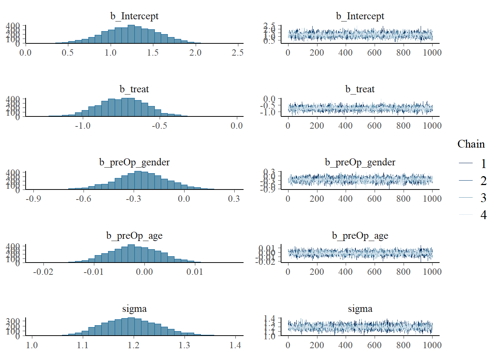

This page includes the solutions to the optional practice problems for the given week. If you want to see a version without solutions please click here. Data sets, if needed, are provided on the BIOS 6618 Canvas page for students registered for the course.
This week’s extra practice exercises are focusing on implementing and interpreting a linear regression model using Bayesian approaches. We leverage the same data set from the MLR practice problems to help compare results with our frequentist approaches.
Dataset Background
The following code can load the Licorice_Gargle.csv file into R leveraging the here package:
Code
dat_all <-read.csv('../../.data/Licorice_Gargle.csv')# remove records with missing data for the outcome or any predictors:complete_case_vec <-complete.cases(dat_all[,c('pacu30min_throatPain','preOp_gender','preOp_age','treat')]) # creates a vector of TRUE or FALSE for each row if the cases are complete (i.e., no NA values)dat <- dat_all[complete_case_vec,]
The dataset represents a randomized control trial of 236 adult patients undergoing elective thoracic surgery requiring a double-lumen endotracheal tube comparing if licorice vs. sugar-water gargle prevents postoperative sore throat. For our exercises below we will focus on the following variables:
pacu30min_throatPain: sore throat pain score at rest 30 minutes after arriving in the post-anesthesia care unit (PACU) measured on an 11 point Likert scale (0=no pain to 10=worst pain)
preOp_gender: an indicator variable for gender (0=Male, 1=Female)
preOp_age: age (in years)
treat: the randomized treatment in the trial where 0=sugar 5g and 1=licorice 0.5g
Exercise 1: Multiple Linear Regression Example
1a: Fitting the Model (Frequentist)
Fit the frequentist multiple linear regression model for the outcome of throat pain (i.e., dependent variable) and independent variables for ASA score, gender, age, and treatment status. Print the summary table output for reference in the following questions.
Solution:
Our (frequentist) linear regression model is
Code
# Fit with glm functionglm_full <-glm(pacu30min_throatPain ~ treat + preOp_gender + preOp_age, data=dat)summary(glm_full)
Call:
glm(formula = pacu30min_throatPain ~ treat + preOp_gender + preOp_age,
data = dat)
Coefficients:
Estimate Std. Error t value Pr(>|t|)
(Intercept) 1.229559 0.317234 3.876 0.000139 ***
treat -0.744559 0.156179 -4.767 3.32e-06 ***
preOp_gender -0.259238 0.159345 -1.627 0.105134
preOp_age -0.001819 0.005051 -0.360 0.719128
---
Signif. codes: 0 '***' 0.001 '**' 0.01 '*' 0.05 '.' 0.1 ' ' 1
(Dispersion parameter for gaussian family taken to be 1.415709)
Null deviance: 361.14 on 232 degrees of freedom
Residual deviance: 324.20 on 229 degrees of freedom
AIC: 748.19
Number of Fisher Scoring iterations: 2
The 95% confidence intervals (to compare with credible intervals later) are:
Code
# Print confidence intervals to use for later responsesconfint(glm_full)
Fit the Bayesian multiple linear regression model for the outcome of throat pain (i.e., dependent variable) and independent variables for ASA score, gender, age, and treatment status. Assume priors of \(\beta_i \sim N(\mu=0,\sigma=100)\) for all beta coefficients and use the default prior for \(\sigma\) in your chosen package/software. Compare your results to the frequentist linear regression in 1a. Provide an interpretation of the slope for the treatment effect and its 95% credible interval.
Solution:
We will use the brms package for our Bayesian implementation:
Code
library(brms)set.seed(515) # set seed for reproducibilitybayes1 <-brm( pacu30min_throatPain ~ treat + preOp_gender + preOp_age, data = dat,family =gaussian(),prior =c(set_prior("normal(0,10000)", class='b'),set_prior("normal(0,10000)", class='Intercept')) )
Code
library(brms) # load packagesummary(bayes1)
Family: gaussian
Links: mu = identity; sigma = identity
Formula: pacu30min_throatPain ~ treat + preOp_gender + preOp_age
Data: dat (Number of observations: 233)
Draws: 4 chains, each with iter = 2000; warmup = 1000; thin = 1;
total post-warmup draws = 4000
Regression Coefficients:
Estimate Est.Error l-95% CI u-95% CI Rhat Bulk_ESS Tail_ESS
Intercept 1.24 0.32 0.61 1.84 1.00 5777 3483
treat -0.75 0.16 -1.05 -0.44 1.00 5223 3217
preOp_gender -0.26 0.16 -0.58 0.05 1.00 5248 3078
preOp_age -0.00 0.01 -0.01 0.01 1.00 5645 3494
Further Distributional Parameters:
Estimate Est.Error l-95% CI u-95% CI Rhat Bulk_ESS Tail_ESS
sigma 1.19 0.06 1.09 1.31 1.00 4529 3210
Draws were sampled using sampling(NUTS). For each parameter, Bulk_ESS
and Tail_ESS are effective sample size measures, and Rhat is the potential
scale reduction factor on split chains (at convergence, Rhat = 1).
Code
posterior_summary(bayes1) # get results to place into table, 95% CrI specifically
prior class coef group resp dpar nlpar lb ub
normal(0,10000) b
normal(0,10000) b preOp_age
normal(0,10000) b preOp_gender
normal(0,10000) b treat
normal(0,10000) Intercept
student_t(3, 0, 2.5) sigma 0
source
user
(vectorized)
(vectorized)
(vectorized)
user
default
For those in the treatment group with licorice gargle, throat pain at 30 minutes in the PACU is 0.75 points lower (95% CrI: 0.61, 1.84) on average than those in the control group with sugar water after adjusting for age and gender.
In general, our beta coefficients and standard errors are quite similiar. The 95% confidence intervals and 95% credible intervals are also fairly similar. This suggests that using “non-informative” priors may result in similar findings to those of the standard frequentist analysis, but we would want to consider other priors that may be meaningful as well. We can also note that our Rhat estimates are all 1.0, suggesting good convergence for our MCMC.
1c: MCMC Diagnostic Plots
Create the density and trace plots for your intercept and slope parameters from 1b. Briefly describe them and note any potential issues. Note, it is okay if additional parameters are included in your plots, just focus on the beta coefficients for this problem.
Solution:
Code
plot(bayes1)

We see that the posterior distribution for each beta coefficient is approximately normal, although the tails may be fatter with some non-normal deviation. The trace plots show mixing across the sample space from all chains, suggesting adequate information for our posterior.
1d: More Informative Priors
Let’s assume that we a priori believed that the treatment should result in a 3 point reduction with a standard deviation of 0.25 (i.e., \(\beta_{treat} \sim N(\mu=-3,\sigma=0.25)\). Now fit the Bayesian model with this informative prior for treatment group but leaving all other priors unchanged from 1c. How do the beta coefficients change? Briefly discuss the potential impact of sample size on the informativeness of the prior.
Solution:
Code
set.seed(515) # set seed for reproducibilitybayes2 <-brm( pacu30min_throatPain ~ treat + preOp_gender + preOp_age, data = dat,family =gaussian(),prior =c(set_prior("normal(-3,0.0625)", coef='treat'),set_prior("normal(0,10000)", class='b'),set_prior("normal(0,10000)", class='Intercept')) )
Code
summary(bayes2)
Family: gaussian
Links: mu = identity; sigma = identity
Formula: pacu30min_throatPain ~ treat + preOp_gender + preOp_age
Data: dat (Number of observations: 233)
Draws: 4 chains, each with iter = 2000; warmup = 1000; thin = 1;
total post-warmup draws = 4000
Regression Coefficients:
Estimate Est.Error l-95% CI u-95% CI Rhat Bulk_ESS Tail_ESS
Intercept 2.40 0.41 1.62 3.20 1.00 5189 3414
treat -2.81 0.06 -2.93 -2.69 1.00 4308 3044
preOp_gender -0.17 0.21 -0.59 0.23 1.00 4853 3095
preOp_age -0.00 0.01 -0.02 0.01 1.00 5285 3276
Further Distributional Parameters:
Estimate Est.Error l-95% CI u-95% CI Rhat Bulk_ESS Tail_ESS
sigma 1.59 0.08 1.45 1.74 1.00 4021 3336
Draws were sampled using sampling(NUTS). For each parameter, Bulk_ESS
and Tail_ESS are effective sample size measures, and Rhat is the potential
scale reduction factor on split chains (at convergence, Rhat = 1).
Code
posterior_summary(bayes2) # get results to place into table, 95% CrI specifically
prior class coef group resp dpar nlpar lb ub
normal(0,10000) b
normal(0,10000) b preOp_age
normal(0,10000) b preOp_gender
normal(-3,0.0625) b treat
normal(0,10000) Intercept
student_t(3, 0, 2.5) sigma 0
source
user
(vectorized)
(vectorized)
user
user
default
The most meaningful changes in our posterior inference are for the intercept and the treatment group beta coefficient. For example, our treatment estimate is now \(\hat{\beta}_{treat}=-2.81\) versus the original \(\hat{\beta}_{treat}=-0.75\) when we used a “non-informative” prior. This suggests our posterior is more reflective of our prior belief than the observed data.
This shift in the treatment group estimate then led to our intercept estimate of \(\hat{\beta}_{0}=2.40\) versus the estimate of \(\hat{\beta}_{0}=1.24\) with the “non-informative” prior. We see that there are some changes to gender and age, but not as large.
Our sample size is 233 for this data set. In an analysis with a larger sample size, we may expect this “informative” prior to be less informative. However, it currently is providing more influence to our posterior estimate of treatment group than the observed likelihood.
1e: Posterior Probability Calculations
Calculate the posterior probabilities that \(P(\hat{\beta}_{treat} \leq 0)\), \(P(\hat{\beta}_{treat} > 0)\), and \(P(\hat{\beta}_{treat} \leq -1)\) for both 1b and 1d. Summarize your results in a table and briefly compare model results.
In this example, we see both the non-informative and informative priors agree with respect to posterior probabilities estimated for 0 (i.e., 100% for being less than or equal to 0 and 0% for being greater than 0).
However, we see very different results for \(P(\hat{\beta}_{treat} \leq -1\)) where the non-informative prior’s posterior probability is only 5.08% (i.e., very unlikely), whereas the informative prior’s posterior probability is 100% (i.e., definitely less than -1). Given that we know the informative prior is very strong and disagrees with our likelihood, it seems more likely that the non-informative prior is appropriately summarizing our results based on the observed data.
In practice, we want to consider multiple priors and present all results while being transparent to their limitations. For instance, we could present our non-informative prior as a potentially more statistically and scientifically conservative priors, but then also present the informative prior and make it clear that this is very strong due to its larger than observed mean difference and small standard deviation. Then, a reader can use this information to decide amongst the results themselves.
Source Code
---title: "Week 14 Practice Problems: Solutions"author: name: Alex Kaizer roles: "Instructor" affiliation: University of Colorado-Anschutz Medical Campustoc: truetoc_float: truetoc-location: leftformat: html: code-fold: show code-overflow: wrap code-tools: true---```{r, echo=F, message=F, warning=F}library(kableExtra)library(dplyr)```This page includes the solutions to the optional practice problems for the given week. If you want to see a version [without solutions please click here](/labs/prac14/index.qmd). Data sets, if needed, are provided on the BIOS 6618 Canvas page for students registered for the course.This week's extra practice exercises are focusing on implementing and interpreting a linear regression model using Bayesian approaches. We leverage the same data set from the MLR practice problems to help compare results with our frequentist approaches.# Dataset BackgroundThe following code can load the `Licorice_Gargle.csv` file into R leveraging the `here` package:```{r, eval=T}dat_all <-read.csv('../../.data/Licorice_Gargle.csv')# remove records with missing data for the outcome or any predictors:complete_case_vec <-complete.cases(dat_all[,c('pacu30min_throatPain','preOp_gender','preOp_age','treat')]) # creates a vector of TRUE or FALSE for each row if the cases are complete (i.e., no NA values)dat <- dat_all[complete_case_vec,]```The dataset represents a randomized control trial of 236 adult patients undergoing elective thoracic surgery requiring a double-lumen endotracheal tube comparing if licorice vs. sugar-water gargle prevents postoperative sore throat. For our exercises below we will focus on the following variables:* `pacu30min_throatPain`: sore throat pain score at rest 30 minutes after arriving in the post-anesthesia care unit (PACU) measured on an 11 point Likert scale (0=no pain to 10=worst pain)* `preOp_gender`: an indicator variable for gender (0=Male, 1=Female)* `preOp_age`: age (in years)* `treat`: the randomized treatment in the trial where 0=sugar 5g and 1=licorice 0.5g# Exercise 1: Multiple Linear Regression Example## 1a: Fitting the Model (Frequentist)Fit the frequentist multiple linear regression model for the outcome of throat pain (i.e., dependent variable) and independent variables for ASA score, gender, age, and treatment status. Print the summary table output for reference in the following questions.**Solution:**Our (frequentist) linear regression model is```{r}# Fit with glm functionglm_full <-glm(pacu30min_throatPain ~ treat + preOp_gender + preOp_age, data=dat)summary(glm_full)```The 95% confidence intervals (to compare with credible intervals later) are:```{r, message=F}# Print confidence intervals to use for later responsesconfint(glm_full)```## 1b: Fitting the Model (Bayesian)Fit the Bayesian multiple linear regression model for the outcome of throat pain (i.e., dependent variable) and independent variables for ASA score, gender, age, and treatment status. Assume priors of $\beta_i \sim N(\mu=0,\sigma=100)$ for all beta coefficients and use the default prior for $\sigma$ in your chosen package/software. Compare your results to the frequentist linear regression in **1a**. Provide an interpretation of the slope for the treatment effect and its 95% credible interval.**Solution:**We will use the `brms` package for our Bayesian implementation:```{r, message=F, warning=F, cache=T, results='hide'}library(brms)set.seed(515) # set seed for reproducibilitybayes1 <-brm( pacu30min_throatPain ~ treat + preOp_gender + preOp_age, data = dat,family =gaussian(),prior =c(set_prior("normal(0,10000)", class='b'),set_prior("normal(0,10000)", class='Intercept')) )``````{r, message=F, warning=F}library(brms) # load packagesummary(bayes1)posterior_summary(bayes1) # get results to place into table, 95% CrI specificallyprior_summary(bayes1) # check priors```For those in the treatment group with licorice gargle, throat pain at 30 minutes in the PACU is 0.75 points lower (95% CrI: 0.61, 1.84) on average than those in the control group with sugar water after adjusting for age and gender.In general, our beta coefficients and standard errors are quite similiar. The 95% confidence intervals and 95% credible intervals are also fairly similar. This suggests that using "non-informative" priors may result in similar findings to those of the standard frequentist analysis, but we would want to consider other priors that may be meaningful as well. We can also note that our Rhat estimates are all 1.0, suggesting good convergence for our MCMC.## 1c: MCMC Diagnostic PlotsCreate the density and trace plots for your intercept and slope parameters from **1b**. Briefly describe them and note any potential issues. *Note, it is okay if additional parameters are included in your plots, just focus on the beta coefficients for this problem.***Solution:**```{r}plot(bayes1)```We see that the posterior distribution for each beta coefficient is approximately normal, although the tails may be fatter with some non-normal deviation. The trace plots show mixing across the sample space from all chains, suggesting adequate information for our posterior.## 1d: More Informative PriorsLet's assume that we *a priori* believed that the treatment should result in a 3 point reduction with a standard deviation of 0.25 (i.e., $\beta_{treat} \sim N(\mu=-3,\sigma=0.25)$. Now fit the Bayesian model with this informative prior for treatment group but leaving all other priors unchanged from **1c**. How do the beta coefficients change? Briefly discuss the potential impact of sample size on the informativeness of the prior.**Solution:**```{r, message=F, warning=F, cache=T, results='hide'}set.seed(515) # set seed for reproducibilitybayes2 <-brm( pacu30min_throatPain ~ treat + preOp_gender + preOp_age, data = dat,family =gaussian(),prior =c(set_prior("normal(-3,0.0625)", coef='treat'),set_prior("normal(0,10000)", class='b'),set_prior("normal(0,10000)", class='Intercept')) )``````{r, message=F, warning=F}summary(bayes2)posterior_summary(bayes2) # get results to place into table, 95% CrI specificallyprior_summary(bayes2) # check priors```The most meaningful changes in our posterior inference are for the intercept and the treatment group beta coefficient. For example, our treatment estimate is now $\hat{\beta}_{treat}=-2.81$ versus the original $\hat{\beta}_{treat}=-0.75$ when we used a "non-informative" prior. This suggests our posterior is more reflective of our prior belief than the observed data.This shift in the treatment group estimate then led to our intercept estimate of $\hat{\beta}_{0}=2.40$ versus the estimate of $\hat{\beta}_{0}=1.24$ with the "non-informative" prior. We see that there are some changes to gender and age, but not as large.Our sample size is 233 for this data set. In an analysis with a larger sample size, we may expect this "informative" prior to be less informative. However, it currently is providing more influence to our posterior estimate of treatment group than the observed likelihood.## 1e: Posterior Probability CalculationsCalculate the posterior probabilities that $P(\hat{\beta}_{treat} \leq 0)$, $P(\hat{\beta}_{treat} > 0)$, and $P(\hat{\beta}_{treat} \leq -1)$ for both **1b** and **1d**. Summarize your results in a table and briefly compare model results.**Solution:**```{r, warning=F, message=F}# extract posterior samples for calculationspost1 <-as_draws_df(bayes1)post2 <-as_draws_df(bayes2)# P(betahat_treat <= 0)pp1_lte0 <-mean( post1[,'b_treat'] <=0 )pp2_lte0 <-mean( post2[,'b_treat'] <=0 )# P(betahat_treat > 0)pp1_gt0 <-mean( post1[,'b_treat'] >0 )pp2_gt0 <-mean( post2[,'b_treat'] >0 )# P(betahat_treat <= -1)pp1_lten1 <-mean( post1[,'b_treat'] <=-1 )pp2_lten1 <-mean( post2[,'b_treat'] <=-1 )# make matrix for table of results, round to 4 placesres_mat <-matrix( round( c(pp1_lte0, pp1_gt0, pp1_lten1, pp2_lte0, pp2_gt0, pp2_lten1), 4), nrow=2, byrow=T,dimnames =list( c('Non-Informative Prior (1b)','Informative Prior (1d)') ,c('<=0','>0','<=-1')) )# print tableres_mat```In this example, we see both the non-informative and informative priors agree with respect to posterior probabilities estimated for 0 (i.e., 100% for being less than or equal to 0 and 0% for being greater than 0). However, we see very different results for $P(\hat{\beta}_{treat} \leq -1$) where the non-informative prior's posterior probability is only 5.08% (i.e., very unlikely), whereas the informative prior's posterior probability is 100% (i.e., definitely less than -1). Given that we know the informative prior is very strong and disagrees with our likelihood, it seems more likely that the non-informative prior is appropriately summarizing our results based on the observed data. In practice, we want to consider multiple priors and present all results while being transparent to their limitations. For instance, we could present our non-informative prior as a potentially more statistically and scientifically conservative priors, but then also present the informative prior and make it clear that this is very strong due to its larger than observed mean difference and small standard deviation. Then, a reader can use this information to decide amongst the results themselves.